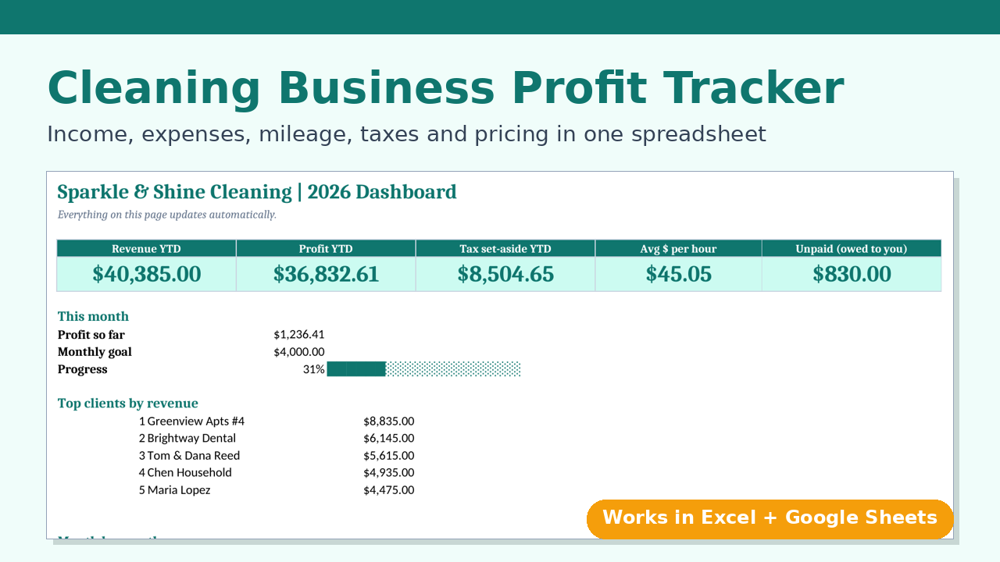

Know what your cleaning business really earns
Free calculators to price jobs and check your profit, plus a simple spreadsheet that does your bookkeeping for you.
House cleaning price calculator
Enter the hours and the pay you want. Get a price that covers supplies, driving and overhead.
Price a jobProfit and hourly rate calculator
See what you actually keep each month after costs and taxes, and your true hourly pay.
Check my profitMileage deduction calculator
Find out how much your business driving could lower your tax bill.
Count my miles
Track every job, expense and mile in one spreadsheet
The Cleaning Business Profit Tracker shows your real profit, your real hourly rate, what to set aside for taxes, and which clients still owe you. It works in Excel and Google Sheets and includes this price calculator.
Get the tracker for $19